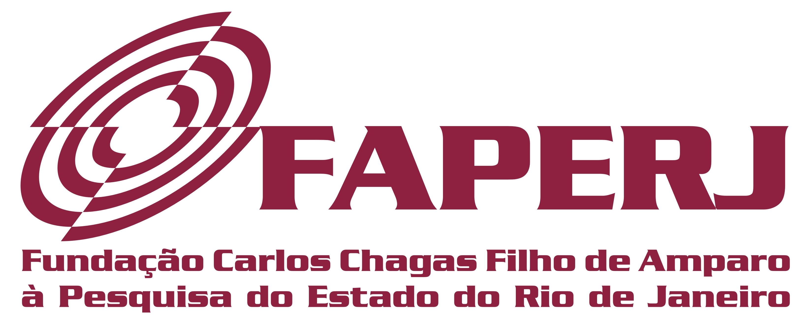

Professional portal
Professor of Mechanical Engineering and Computational Scientist
Numerical simulation of single- and two-phase flows, heat transfer and scientific computing.
Research, teaching and mentorship focused on computational mechanics, multiphase flows and reproducible scientific software.
Profile
Background and collaborations
Overview of academic work, current role and collaboration scope.
Links
Featured references
Lattes CV · GitHub · ORCID
- Multiphase and two-phase flows
- Heat and mass transfer
- Computational fluid dynamics
- Finite element methods
- Scientific computing in Python and C/C++
Research highlights
Active themes and funded initiatives

Interface Dynamics, Heat and Mass Transfer, and Coalescence of Multiple Bubbles in Complex Geometries
This project proposes the development of a novel numerical framework to simu- late interface dynamics, heat and mass transfer, and coalescence of multiple bubbles in two-phase flows with complex geometries. Using modern programming languages such as Python and C++, the method employs High-Order Finite Ele- ment Methods in 2D and 3D, Moving Meshes, High-Order Semi-Lagrangian schemes, Interface Tracking, Adaptive Mesh Refinement, and Variable Time Stepping.
Simulation of Multiphase Flows with Heat and Mass Transfer in Unstructured Meshes
Numerical simulation is an important tool to solve two-phase problems found in many engineering problems. Therefore, a project in the thematic line of multiphase flow simulation, which has important applications in the area of petroleum, micro-reactors and biomechanics. The project's emphasis is on the development of numerical simulation methods based on unstructured meshes, for flows that presents two or more distinct phases.
Minerva Aerodesign
Founded in 2001, Minerva Aerodesign is an academic competition team dedicated to participating in aerodesign competitions promoted by the Society of Automotive Engineers. Its mission is to deepen technical knowledge, develop management skills and foster innovation through the design and construction of small unmanned aerial vehicles for competitions. Throughout the year, at SAE Brasil Aerodesign, the team develops a prototype aimed at cargo transportation.
Recent output
Selected publications
Numerical Simulation of a Non-Newtonian Fluid-Solid Interaction
F. G. S. Junior; S. McGinty; G. R. Anjos
Proceedings of the 28th International Congress of Mechanical Engineering
Numerical Investigation of a Gas Bubble in Complex Geometries for Industrial Process Equipment Design
Daniel B. V. Santos; Antônio E. M. Santos; Enio P. Bandarra Filho; G. R. Anjos
Fluids
An ALE-SL Method for Fluid-Structure Interactions in Riser Dynamics
G. Garden; I. Fortuna; G. R. Anjos; J. Su
Proceedings of the 28th International Congress of Mechanical Engineering
A Robust Newton-Based Variational Framework for Nonlinear Conduction-Radiation PDEs with Localized Sources
J. L. Silva Neto; E. D. Correa; R. M. S. Gama; G. R. Anjos
Proceedings of the Encontro Nacional de Modelagem Computacional
A Finite Element Analysis of Flow-Induced Vibration in Nonlinear Elastic Structures
J. P. I. Souza; G. R. Anjos
Proceedings of the 28th International Congress of Mechanical Engineering
Validation of CFD Simulations Using the Darcy-Forchheimer Model Against Experimental Data for Bag Filters
L. B. Menezes; J. R. Januario; G.R. Anjos
Anais do 20th Brazilian Congress of Thermal Sciences and Engineering
Mentorship
Current supervision
Daniel Barbedo Vasconcelos Santos
Finite Element Simulation Fluid-Structure Interaction
Eduardo Dias Correa
Analytical and Numerical Method for non-Linear Problems in Convection and Radiation Heat Transfer
Antonio Emanuel Marques dos Santos
Numerical Analysis of Two-Phase Flow using the Finite Element Method
Fábio Gaspar Júnior
Immersed Finite-Element Methods for FSI
Gabriel Ricardo Güntensperger Sousa
Numerical Investigation of Droplet Approximation and Coalescence in Biofuel Synthesis
Jorge Angel Aguilera Liendo
Numerical Investigation of Aerodynamics in Pipes
Profile
Background and collaborations
Welcome to my professional portal. Here you will find research highlights, teaching material, selected publications and supervision activity centered on numerical simulation of single- and two-phase flows.
My doctoral work focused on finite-element discretization of fluid motion, interfacial force modeling and robust scientific software. Since then, my work has expanded toward complex geometries, porous media, microchannel cooling and multiphase flow applications in energy and process engineering.
I currently serve as professor at UFRJ/COPPE and collaborate across academic and applied research initiatives involving high-performance computation, multiphysics modeling and reproducible numerical methods.
Network